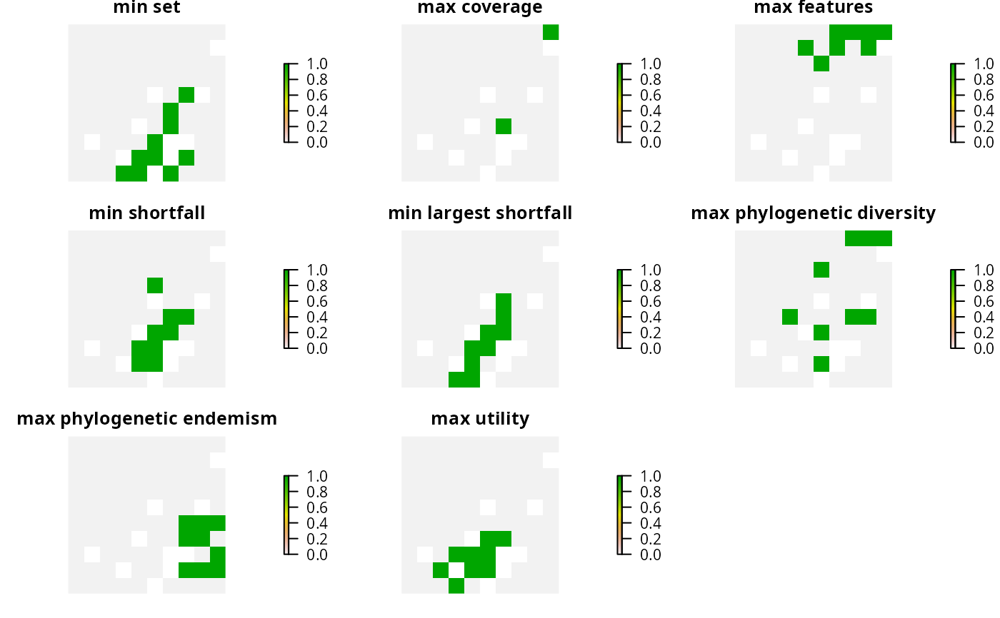

An objective is used to specify the overall goal of a conservation planning
problem(). All conservation planning problems involve minimizing #' or maximizing some kind of objective. For instance, the planner may require
a solution that conserves enough habitat for each species while minimizing
the overall cost of the reserve network. Alternatively, the planner may
require a solution that maximizes the number of conserved species while
ensuring that the cost of the reserve network does not exceed the budget.
Please note that failing to specify an objective before attempting to solve a problem will return an error.
The following objectives can be added to a conservation planning
problem():
add_min_set_objective()Minimize the cost of the solution whilst ensuring that all targets are met. This objective is similar to that used in Marxan.
add_max_cover_objective()Represent at least one instance of as many features as possible within a given budget.
add_max_features_objective()Fulfill as many targets as possible while ensuring that the cost of the solution does not exceed a budget.
add_min_shortfall_objective()Minimize the shortfall for as many targets as possible while ensuring that the cost of the solution does not exceed a budget.
add_max_phylo_div_objective()Maximize the phylogenetic diversity of the features represented in the solution subject to a budget.
add_max_phylo_end_objective()Maximize the phylogenetic endemism of the features represented in the solution subject to a budget.
add_max_utility_objective()Secure as much of the features as possible without exceeding a budget.
# load data data(sim_pu_raster, sim_features, sim_phylogeny) # create base problem p <- problem(sim_pu_raster, sim_features) %>% add_relative_targets(0.1) # create problem with added minimum set objective p1 <- p %>% add_min_set_objective() # create problem with added maximum coverage objective # note that this objective does not use targets p2 <- p %>% add_max_cover_objective(500) # create problem with added maximum feature representation objective p3 <- p %>% add_max_features_objective(1900) # create problem with added minimum shortfall objective p4 <- p %>% add_min_shortfall_objective(1900) # create problem with added maximum phylogenetic diversity objective p5 <- p %>% add_max_phylo_div_objective(1900, sim_phylogeny) # create problem with added maximum phylogenetic diversity objective p6 <- p %>% add_max_phylo_end_objective(1900, sim_phylogeny) # create problem with added maximum utility objective # note that this objective does not use targets p7 <- p %>% add_max_utility_objective(1900) # \donttest{ # solve problems s <- stack(solve(p1), solve(p2), solve(p3), solve(p4), solve(p5), solve(p6), solve(p7))#> Gurobi Optimizer version 9.0.1 build v9.0.1rc0 (linux64) #> Optimize a model with 5 rows, 90 columns and 450 nonzeros #> Model fingerprint: 0x6442bf6e #> Variable types: 0 continuous, 90 integer (90 binary) #> Coefficient statistics: #> Matrix range [2e-01, 9e-01] #> Objective range [2e+02, 2e+02] #> Bounds range [1e+00, 1e+00] #> RHS range [3e+00, 8e+00] #> Found heuristic solution: objective 2337.9617505 #> Presolve time: 0.00s #> Presolved: 5 rows, 90 columns, 450 nonzeros #> Variable types: 0 continuous, 90 integer (90 binary) #> Presolved: 5 rows, 90 columns, 450 nonzeros #> #> #> Root relaxation: objective 1.931582e+03, 12 iterations, 0.00 seconds #> #> Nodes | Current Node | Objective Bounds | Work #> Expl Unexpl | Obj Depth IntInf | Incumbent BestBd Gap | It/Node Time #> #> 0 0 1931.58191 0 4 2337.96175 1931.58191 17.4% - 0s #> H 0 0 1987.3985265 1931.58191 2.81% - 0s #> #> Explored 1 nodes (12 simplex iterations) in 0.00 seconds #> Thread count was 1 (of 4 available processors) #> #> Solution count 2: 1987.4 2337.96 #> #> Optimal solution found (tolerance 1.00e-01) #> Best objective 1.987398526526e+03, best bound 1.931581908865e+03, gap 2.8085%#> Warning: ignoring targets since the specified objective function doesn't use targets#> Warning: ignoring targets since the specified objective function doesn't use targets#> Gurobi Optimizer version 9.0.1 build v9.0.1rc0 (linux64) #> Optimize a model with 6 rows, 95 columns and 545 nonzeros #> Model fingerprint: 0x13da37b0 #> Variable types: 0 continuous, 95 integer (95 binary) #> Coefficient statistics: #> Matrix range [2e-01, 2e+02] #> Objective range [1e-04, 1e+00] #> Bounds range [1e+00, 1e+00] #> RHS range [5e+02, 5e+02] #> Found heuristic solution: objective -0.0000000 #> Presolve removed 1 rows and 1 columns #> Presolve time: 0.01s #> Presolved: 5 rows, 94 columns, 454 nonzeros #> Variable types: 0 continuous, 94 integer (94 binary) #> Presolved: 5 rows, 94 columns, 454 nonzeros #> #> #> Root relaxation: objective 3.999782e+00, 4 iterations, 0.00 seconds #> #> Nodes | Current Node | Objective Bounds | Work #> Expl Unexpl | Obj Depth IntInf | Incumbent BestBd Gap | It/Node Time #> #> 0 0 3.99978 0 2 -0.00000 3.99978 - - 0s #> H 0 0 2.9997849 3.99978 33.3% - 0s #> H 0 0 3.9997816 3.99978 0.00% - 0s #> #> Explored 1 nodes (4 simplex iterations) in 0.01 seconds #> Thread count was 1 (of 4 available processors) #> #> Solution count 3: 3.99978 2.99978 -0 #> #> Optimal solution found (tolerance 1.00e-01) #> Best objective 3.999781560479e+00, best bound 3.999782101660e+00, gap 0.0000% #> Gurobi Optimizer version 9.0.1 build v9.0.1rc0 (linux64) #> Optimize a model with 6 rows, 95 columns and 545 nonzeros #> Model fingerprint: 0x90005173 #> Variable types: 0 continuous, 95 integer (95 binary) #> Coefficient statistics: #> Matrix range [2e-01, 2e+02] #> Objective range [1e-04, 1e+00] #> Bounds range [1e+00, 1e+00] #> RHS range [2e+03, 2e+03] #> Found heuristic solution: objective -0.0000000 #> Presolve time: 0.00s #> Presolved: 6 rows, 95 columns, 545 nonzeros #> Variable types: 0 continuous, 95 integer (95 binary) #> Presolved: 6 rows, 95 columns, 545 nonzeros #> #> #> Root relaxation: objective 4.942863e+00, 21 iterations, 0.00 seconds #> #> Nodes | Current Node | Objective Bounds | Work #> Expl Unexpl | Obj Depth IntInf | Incumbent BestBd Gap | It/Node Time #> #> 0 0 4.94286 0 5 -0.00000 4.94286 - - 0s #> 0 0 4.72292 0 6 -0.00000 4.72292 - - 0s #> H 0 0 1.9990360 4.72292 136% - 0s #> 0 0 4.72179 0 8 1.99904 4.72179 136% - 0s #> 0 0 4.71233 0 7 1.99904 4.71233 136% - 0s #> 0 0 4.71121 0 8 1.99904 4.71121 136% - 0s #> 0 0 4.65989 0 8 1.99904 4.65989 133% - 0s #> 0 0 4.65922 0 8 1.99904 4.65922 133% - 0s #> 0 0 4.65845 0 9 1.99904 4.65845 133% - 0s #> 0 0 4.65831 0 10 1.99904 4.65831 133% - 0s #> 0 0 4.65830 0 11 1.99904 4.65830 133% - 0s #> 0 0 4.65756 0 13 1.99904 4.65756 133% - 0s #> 0 2 4.65687 0 13 1.99904 4.65687 133% - 0s #> H 6 4 1.9990909 3.80905 90.5% 9.0 0s #> #> Cutting planes: #> Cover: 1 #> MIR: 3 #> StrongCG: 2 #> RLT: 2 #> #> Explored 21 nodes (189 simplex iterations) in 0.06 seconds #> Thread count was 1 (of 4 available processors) #> #> Solution count 3: 1.99909 1.99904 -0 #> #> Optimal solution found (tolerance 1.00e-01) #> Best objective 1.999090896800e+00, best bound 1.999377040845e+00, gap 0.0143% #> Gurobi Optimizer version 9.0.1 build v9.0.1rc0 (linux64) #> Optimize a model with 6 rows, 95 columns and 545 nonzeros #> Model fingerprint: 0x06167115 #> Variable types: 5 continuous, 90 integer (90 binary) #> Coefficient statistics: #> Matrix range [2e-01, 2e+02] #> Objective range [1e-01, 3e-01] #> Bounds range [1e+00, 1e+00] #> RHS range [3e+00, 2e+03] #> Found heuristic solution: objective 5.0000000 #> Found heuristic solution: objective 5.0000000 #> Presolve time: 0.00s #> Presolved: 6 rows, 95 columns, 545 nonzeros #> Variable types: 5 continuous, 90 integer (90 binary) #> Presolved: 6 rows, 95 columns, 545 nonzeros #> #> #> Root relaxation: objective 5.610918e-02, 19 iterations, 0.00 seconds #> #> Nodes | Current Node | Objective Bounds | Work #> Expl Unexpl | Obj Depth IntInf | Incumbent BestBd Gap | It/Node Time #> #> 0 0 0.05611 0 3 5.00000 0.05611 98.9% - 0s #> H 0 0 0.3103042 0.05611 81.9% - 0s #> H 0 0 0.3085453 0.05611 81.8% - 0s #> H 0 0 0.3012559 0.05611 81.4% - 0s #> 0 0 0.05921 0 5 0.30126 0.05921 80.3% - 0s #> H 0 0 0.3011751 0.05921 80.3% - 0s #> H 0 0 0.2981442 0.05921 80.1% - 0s #> H 0 0 0.2964803 0.05921 80.0% - 0s #> 0 0 0.06484 0 4 0.29648 0.06484 78.1% - 0s #> 0 0 0.27609 0 2 0.29648 0.27609 6.88% - 0s #> #> Cutting planes: #> MIR: 4 #> StrongCG: 3 #> #> Explored 1 nodes (45 simplex iterations) in 0.01 seconds #> Thread count was 1 (of 4 available processors) #> #> Solution count 7: 0.29648 0.298144 0.301175 ... 5 #> #> Optimal solution found (tolerance 1.00e-01) #> Best objective 2.964803023750e-01, best bound 2.760925799731e-01, gap 6.8766% #> Gurobi Optimizer version 9.0.1 build v9.0.1rc0 (linux64) #> Optimize a model with 14 rows, 103 columns and 565 nonzeros #> Model fingerprint: 0x19bea6ab #> Variable types: 0 continuous, 103 integer (103 binary) #> Coefficient statistics: #> Matrix range [2e-01, 2e+02] #> Objective range [4e-06, 1e+00] #> Bounds range [1e+00, 1e+00] #> RHS range [2e+03, 2e+03] #> Found heuristic solution: objective -0.0000000 #> Presolve removed 5 rows and 5 columns #> Presolve time: 0.00s #> Presolved: 9 rows, 98 columns, 555 nonzeros #> Variable types: 0 continuous, 98 integer (98 binary) #> Presolved: 9 rows, 98 columns, 555 nonzeros #> #> #> Root relaxation: objective 5.344516e+00, 23 iterations, 0.00 seconds #> #> Nodes | Current Node | Objective Bounds | Work #> Expl Unexpl | Obj Depth IntInf | Incumbent BestBd Gap | It/Node Time #> #> 0 0 5.34452 0 5 -0.00000 5.34452 - - 0s #> 0 0 5.24678 0 6 -0.00000 5.24678 - - 0s #> H 0 0 2.9402664 5.24678 78.4% - 0s #> 0 0 5.24429 0 7 2.94027 5.24429 78.4% - 0s #> 0 0 5.24428 0 8 2.94027 5.24428 78.4% - 0s #> 0 0 5.24405 0 8 2.94027 5.24405 78.4% - 0s #> 0 0 5.24401 0 9 2.94027 5.24401 78.4% - 0s #> 0 0 5.24399 0 10 2.94027 5.24399 78.4% - 0s #> 0 0 5.24397 0 10 2.94027 5.24397 78.4% - 0s #> 0 2 5.24023 0 10 2.94027 5.24023 78.2% - 0s #> H 6 3 3.5363171 4.18960 18.5% 6.8 0s #> #> Cutting planes: #> Cover: 1 #> MIR: 3 #> RLT: 1 #> #> Explored 9 nodes (111 simplex iterations) in 0.04 seconds #> Thread count was 1 (of 4 available processors) #> #> Solution count 3: 3.53632 2.94027 -0 #> #> Optimal solution found (tolerance 1.00e-01) #> Best objective 3.536317127664e+00, best bound 3.833000595646e+00, gap 8.3896% #> Gurobi Optimizer version 9.0.1 build v9.0.1rc0 (linux64) #> Optimize a model with 14 rows, 103 columns and 565 nonzeros #> Model fingerprint: 0x3612cd77 #> Variable types: 0 continuous, 103 integer (103 binary) #> Coefficient statistics: #> Matrix range [2e-01, 2e+02] #> Objective range [1e-04, 7e+01] #> Bounds range [1e+00, 1e+00] #> RHS range [2e+03, 2e+03] #> Found heuristic solution: objective -0.0000000 #> Presolve removed 5 rows and 5 columns #> Presolve time: 0.00s #> Presolved: 9 rows, 98 columns, 555 nonzeros #> Variable types: 0 continuous, 98 integer (98 binary) #> Presolved: 9 rows, 98 columns, 555 nonzeros #> #> #> Root relaxation: objective 2.016809e+02, 20 iterations, 0.00 seconds #> #> Nodes | Current Node | Objective Bounds | Work #> Expl Unexpl | Obj Depth IntInf | Incumbent BestBd Gap | It/Node Time #> #> 0 0 201.68085 0 5 -0.00000 201.68085 - - 0s #> H 0 0 136.2380565 201.68085 48.0% - 0s #> 0 0 197.58020 0 6 136.23806 197.58020 45.0% - 0s #> 0 0 197.51139 0 7 136.23806 197.51139 45.0% - 0s #> 0 0 197.48202 0 8 136.23806 197.48202 45.0% - 0s #> 0 0 197.47800 0 9 136.23806 197.47800 45.0% - 0s #> 0 0 197.47611 0 9 136.23806 197.47611 44.9% - 0s #> 0 0 197.45130 0 9 136.23806 197.45130 44.9% - 0s #> 0 0 197.44461 0 10 136.23806 197.44461 44.9% - 0s #> 0 0 197.43100 0 11 136.23806 197.43100 44.9% - 0s #> 0 0 197.42103 0 12 136.23806 197.42103 44.9% - 0s #> 0 0 197.42090 0 13 136.23806 197.42090 44.9% - 0s #> 0 0 197.41966 0 13 136.23806 197.41966 44.9% - 0s #> 0 0 187.93839 0 10 136.23806 187.93839 37.9% - 0s #> 0 2 187.59883 0 10 136.23806 187.59883 37.7% - 0s #> #> Cutting planes: #> Cover: 1 #> MIR: 3 #> StrongCG: 1 #> RLT: 1 #> #> Explored 6 nodes (115 simplex iterations) in 0.04 seconds #> Thread count was 1 (of 4 available processors) #> #> Solution count 2: 136.238 -0 #> #> Optimal solution found (tolerance 1.00e-01) #> Best objective 1.362380564988e+02, best bound 1.362383942298e+02, gap 0.0002%#> Warning: ignoring targets since the specified objective function doesn't use targets#> Warning: ignoring targets since the specified objective function doesn't use targets#> Gurobi Optimizer version 9.0.1 build v9.0.1rc0 (linux64) #> Optimize a model with 6 rows, 95 columns and 545 nonzeros #> Model fingerprint: 0x444be8ff #> Variable types: 5 continuous, 90 integer (90 binary) #> Coefficient statistics: #> Matrix range [2e-01, 2e+02] #> Objective range [1e-04, 1e+00] #> Bounds range [1e+00, 7e+01] #> RHS range [2e+03, 2e+03] #> Found heuristic solution: objective -0.0000000 #> Presolve removed 5 rows and 5 columns #> Presolve time: 0.00s #> Presolved: 1 rows, 90 columns, 90 nonzeros #> Variable types: 0 continuous, 90 integer (90 binary) #> Presolved: 1 rows, 90 columns, 90 nonzeros #> #> #> Root relaxation: objective 2.867309e+01, 1 iterations, 0.00 seconds #> #> Nodes | Current Node | Objective Bounds | Work #> Expl Unexpl | Obj Depth IntInf | Incumbent BestBd Gap | It/Node Time #> #> 0 0 28.67309 0 1 -0.00000 28.67309 - - 0s #> H 0 0 27.0219165 28.67309 6.11% - 0s #> #> Explored 1 nodes (1 simplex iterations) in 0.00 seconds #> Thread count was 1 (of 4 available processors) #> #> Solution count 2: 27.0219 -0 #> #> Optimal solution found (tolerance 1.00e-01) #> Best objective 2.702191654378e+01, best bound 2.867309283818e+01, gap 6.1105%# plot solutions plot(s, axes = FALSE, box = FALSE, main = c("minimum set", "maximum coverage", "maximum features", "minimum shortfall", "maximum phylogenetic diversity", "maximum phylogenetic endemism", "maximum utility"))# }